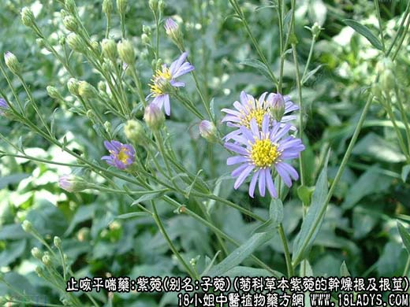
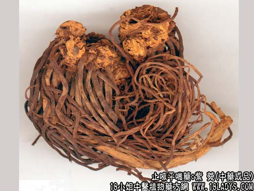
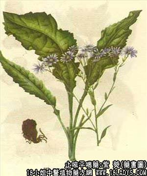

本品为常用中药。《神农本草经》列为上品。
别名：子菀、小辫儿（安国）。
来源：为菊科多年生草本植物紫菀的干燥根及根茎。均为栽培。
植物形态：多年生草本，高约1～1.5米。具不规则的块状根茎，簇生多数细根、灰紫色，基生叶丛生，长椭圆形，边缘具锯齿状，两面疏生小刚毛，叶基部渐狭延长成翼状的叶柄茎生叶生近无柄。茎直立，单一，直径约1厘米，上部有分枝。头状花序成复伞房状，花两色，外围为一轮舌状花，花冠兰紫色，长1.5～1.8厘米，中心为管状花，花冠黄色，长约6毫米，瘦果扁平，倒卵形，长约3毫米，具白色冠毛。
产地：生产于河北安国、安徽毫县。
性状鉴别：根茎为不规则的疙瘩块状，长约2～6厘米，直径约1.5～3厘米。顶端有茎基及叶柄的残留，其下簇生许多细根，形如马尾或编成辫状。根长约5～15毫米，直径1～2毫米表面淡紫色或紫棕色，具纵皱纹，断面淡黄白色，质稍柔软，气微，味甜。以根多而长，棕紫色，去净地上茎无泥土者为佳。
功效与作用：传统经验认为能止咳化痰，现代实验证实能显著地增加呼吸道腺体的分泌，使痰液稀释，易于咳出，这可能与其所含的紫菀皂甙有关。但一般认为镇咳作用不明显（也有实验谓紫菀彤有镇咳作用）。此外，有些实验还没证实紫菀有抗结核的作用。能抑制人型及牛型结核杆菌，且对动物有保护作用。另体外试验对大肠杆菌，宋农痢疾杆菌和对流感病毒有抑制作用。其槲皮素有利尿作用。紫菀皂甙有很强的利尿作用。
炮制：切嘴生用或蜜制。
性味：辛、苦、温。
归经：入肺经。
功能：润肺下其，消痰止咳。
主治：风寒咳嗽、气喘痰多、肺虚久咳咯血。
临床应用：主要用于慢性咳嗽，尤其寒咳，有痰道壅塞，咳吐不爽，或痰中带血（例如慢性气管炎、肺结核病之咳嗽），配百部、桔梗、荆芥等，方如止嗽散。如慢性咳嗽而偏于劳热，设置咳吐脓血，则需配养阴清热药如天冬、黄芩、桑白皮之类，方如紫菀汤。
使用注意：本品并非润药，故凡肺阴不足，虚火上炎者慎用，必须用时，只能在滋阴重剂内酌加少许紫菀配伍。
用量：4.5～9g。
处方举例：止嗽散（《医血心悟》）：紫菀9g，前胡6g，荆芥6g，百部6g，白前6g，桔梗3g，甘草3g，水煎服。
紫菀汤（王海藏方）：炙紫菀9g，黄芩4.5g，天冬9g，桑白皮9g，杏仁6g，桔梗6g，阿胶珠6g（溶化），川贝6g，知母6g，党参6g，五味子12粒，甘草1.5g，水煎服。
注：除以上紫菀外，有些地区使用菊科植物橐吾属十多种植物的根及根茎作紫菀用，如肾叶橐吾、大叶橐吾等，习称山紫菀或土紫菀其中以肾叶橐吾使用的地区较广。本品在全国分布很广，多自产自销。它与紫菀的不同点为：根较细，直径约1毫米，体稍轻，质略硬脆，表皮褐色或黄棕色。断面中间淡黄色细木质心。有特异香气，味淡辛辣有刺舌喉感。